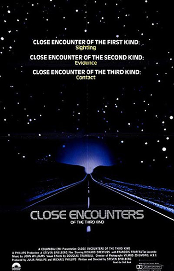

EXTRA
TERRE
STRIAL
ex·tra·ter·res·tri·al
(ĕk′strə-tə-rĕs′trē-əl)
adj.
Originating, located, or occurring outside Earth or its atmosphere: intelligent extraterrestrial life.
n.
An extraterrestrial being or life form.
The Free Dictionary
SOLI
LOQU
IES
so·lil·o·quy
(sə-lĭl′ə-kwē)
n. pl. so·lil·o·quies
1.
a. A dramatic or literary form of discourse in which a character talks to himself or herself or reveals his or her thoughts when alone or unaware of the presence of other characters.
b. A specific speech or piece of writing in this form.
2. The act of speaking to oneself.
The Free Dictionary
LOQU
IES
so·lil·o·quy
(sə-lĭl′ə-kwē)
n. pl. so·lil·o·quies
1.
a. A dramatic or literary form of discourse in which a character talks to himself or herself or reveals his or her thoughts when alone or unaware of the presence of other characters.
b. A specific speech or piece of writing in this form.
2. The act of speaking to oneself.
The Free Dictionary

I
N
D
E
X
N
D
E
X
Abstract........p.
Introduction....p.
Chapter_1.......p.
Chapter_2.......p.
Chapter_3.......p.
Chapter_4.......p.
Chapter_5.......p.
Chapter_6.......p.
Conclusion......p.
References......p.
Appendix........p.
Introduction....p.
Chapter_1.......p.
Chapter_2.......p.
Chapter_3.......p.
Chapter_4.......p.
Chapter_5.......p.
Chapter_6.......p.
Conclusion......p.
References......p.
Appendix........p.
A
B
S
T
R
A
C
T
B
S
T
R
A
C
T
In 1972 and 1973, NASA National Aeronautics and Space Administration www.nasa.gov (a) launched two probes into outerspace called the Pioneer 10 and Pioneer 11A family portrait showing (from left to right) Pioneers 6-9, 10 and 11 and the Pioneer Venus Orbiter and Multiprobe series. Image date: March 11, 1982. NASA(b) spacecrafts. Both of them had a
gold-anodized aluminium plaque
National Aeronautics and Space Administration www.nasa.gov (a) launched two probes into outerspace called the Pioneer 10 and Pioneer 11A family portrait showing (from left to right) Pioneers 6-9, 10 and 11 and the Pioneer Venus Orbiter and Multiprobe series. Image date: March 11, 1982. NASA(b) spacecrafts. Both of them had a
gold-anodized aluminium plaque The plaque was designed by Dr. Carl Sagan and Dr. Frank Drake and drawn by Linda Salzman Sagan.source
(c) on board engraved with illustrations of the physique of a human male and female. With additional symbols explaining its origin. These plates were added to the spacecraft to communicate with any extraterrestrial life form that might come upon them. Some years later, in 1977, NASA launched the Voyager probesVoyager 1 has entered interstellar space. The NASA spacecraft, which rose from Earth on a September morning 36 years ago, has traveled farther than anyone, or anything, in history. source
(d). On board they included golden phonograph records
The plaque was designed by Dr. Carl Sagan and Dr. Frank Drake and drawn by Linda Salzman Sagan.source
(c) on board engraved with illustrations of the physique of a human male and female. With additional symbols explaining its origin. These plates were added to the spacecraft to communicate with any extraterrestrial life form that might come upon them. Some years later, in 1977, NASA launched the Voyager probesVoyager 1 has entered interstellar space. The NASA spacecraft, which rose from Earth on a September morning 36 years ago, has traveled farther than anyone, or anything, in history. source
(d). On board they included golden phonograph records
 NASA placed a more ambitious message aboard Voyager 1 and 2-a kind of time capsule, intended to communicate a story of our world to extraterrestrials source
(e) containing a selection of sounds NASA Soundcloud(f) and images
NASA placed a more ambitious message aboard Voyager 1 and 2-a kind of time capsule, intended to communicate a story of our world to extraterrestrials source
(e) containing a selection of sounds NASA Soundcloud(f) and images 126 images were included on the Golden Records(g) selected to portray our way of living on earth. The launching of these spacecraft could be compared to throwing a bottle with a message in the ocean, hoping that someone, or something, will encounter it and be able to read the message.
126 images were included on the Golden Records(g) selected to portray our way of living on earth. The launching of these spacecraft could be compared to throwing a bottle with a message in the ocean, hoping that someone, or something, will encounter it and be able to read the message.
But in the case of such an encounter, would these images and sounds be sufficiently communicative? How will it communicate with a life form that we know nothing of? What kind of influence does the choice of communication have on the first encounter? Can we apply the knowledge we have from our own ways of communicating?
In the last century, technological advancements have made it possible for humankind to explore the universe we live in. With the vast amount of galaxies already discovered—and that amount is only rising—it could be said that it is only a matter of time untill we find another life form in outerspace.
And who is to say whether these life forms are capable of communication?
It might be bacteria, dwelling in the depths of Titan’saddd(h) methane lakes. But we might also stumble onto a planet whith a rich flora and fauna, just like our planet Earth, providing accomodation for a species capable of basic or highly advanced communication skills.
Apart from the possibilty that they exist, who is to say we will make first contact with them? They might innitiate contact. Will we be able to understand each other? Who decides on the content of our message? How important is our cultural context in such a message?
Until we actually do make contact, the answers to these questions will remain mostly unanswered, as the messages remain soliloquies. But, we can at least consider them, seeing as the search for answers to these questions can teach us a lot about our own ways of communication and the way we look at ourselves as a species. And seeing as we are on the verge of colonising space, the first extraterrestrials we have to communicate with might be ourselves.
I
N
T
R
O
D
U
C
T
I
O
N
N
T
R
O
D
U
C
T
I
O
N
Pale Blue Dot
In 1990, a photo(1) of Earth Earth is the third planet from the Sun and the fifth largest
Earth is the third planet from the Sun and the fifth largest
Planet Profile
orbit: 149,600,000 km (1.00 AU) from Sun
diameter: 12,756.3 km
mass: 5.972e24 kg
Source(2) was taken from the Voyager 1 spacecraft, then 6,000,000,000 removed from its planet of origin. Our planet, reduced to the size of 0.12 pixel. In 2016, the year that I am writing this thesis, the spacecraft has travelled 20,000,000,000 kilometers and has entered interstellar space3 as the first human-made object to do so. Unimaginably large numbers that hint the slightest at how unimaginably large the universe is, and how unimaginably small we are in it. What is peculiar about this spacecraft is that next to its scientific mission, it is carrying an object of diplomacy. An object known to humankind as a record, inscribed with intructions on how to extract its contents. This Golden Record
 NASA placed a message aboard Voyager 1 and 2 -a kind of time capsule, intended to communicate a story of our world to extraterrestrials source4—on which NASANational Aeronautics and Space Administration nasa.gov5 stored images and sounds from Earth—is meant to communicate to any extraterrestrial6 life form that might come upon it what life of Earth looks and sounds like. An object specifically designed to communicate with extraterrestrials.
NASA placed a message aboard Voyager 1 and 2 -a kind of time capsule, intended to communicate a story of our world to extraterrestrials source4—on which NASANational Aeronautics and Space Administration nasa.gov5 stored images and sounds from Earth—is meant to communicate to any extraterrestrial6 life form that might come upon it what life of Earth looks and sounds like. An object specifically designed to communicate with extraterrestrials.
In the course of the last century, a number of such messages have been sent into outer space. However, as of yet, they remain unanswered. They have become soliloquiesso·lil·o·quy
(sə-lĭl′ə-kwē)
n. pl. so·lil·o·quies
1.
a. A dramatic or literary form of discourse in which a character talks to himself or herself or reveals his or her thoughts when alone or unaware of the presence of other characters.
b. A specific speech or piece of writing in this form.
2. The act of speaking to oneself.
The Free Dictionary7—spoken with the supposedly collective voice of the inhabitants of Earth and sent into the great void of space, with its only audience remaining ourselves. The terrestrialadjective
1.
on or relating to the earth.
2.
of or on dry land.
noun
1.
an inhabitant of the earth
dictionary.com8 context that we are accustomed to communicate in has been replaced here with an extraterrestrial one, and as such, the terrestrial design of these messages will have to make way for an extraterrestrial design. But this raises some questions—philosophical, political and ethical questions. Why do we want to send these messages? Who decides on the content of these messages? And how do we present ourselves in these messages?
It all might sound like science-fictionScience fiction (abbreviated SF or sci-fi with varying punctuation and capitalization) is a broad genre of fiction that often involves speculations based on current or future science or technology.
source9—entertainment for star-gazers and conspiracy-theorists. But it is not just that. In history, science-fiction has been employed as a reflective device to predict the future and to hypothesize about the direction we as humankindHuman beings collectively; the human race; humanity.
dictionary.com10 are going into. Using our imagination it has taken us beyond the limits that science has given us in the past. It’s a reflection upon our society, to give social, economical and ecological commentary, and to explore the immensity of the universe, and the part that we play in it. Besides, many subjects that science-fiction has dealt with that seemed far-fetched at the time, were an inspiration for modern science and have become a reality for us now. Think about men walking on the moonOn July 20, 1969, Neil Armstrong became the first human to step on the moon.
source11 (First Men in the Moon Wells, H. G. (1901). First Men in the Moon London, United Kingdom: George Newnes 12), mobile phones (Star-Trek communicatorsStar Trek: The Original Series, Desilu Productions (September 1966–December 1967)13) and commercial space-travelvirgingalactic.com 14 (2001: A space odyssey2001: A space odyssey, Stanley Kubrick & Arthur C. Clarke, 196815).
Wells, H. G. (1901). First Men in the Moon London, United Kingdom: George Newnes 12), mobile phones (Star-Trek communicatorsStar Trek: The Original Series, Desilu Productions (September 1966–December 1967)13) and commercial space-travelvirgingalactic.com 14 (2001: A space odyssey2001: A space odyssey, Stanley Kubrick & Arthur C. Clarke, 196815).

There is, however, still one subject that has eluded the transition from science-fiction to science and is still solely a product of fiction. And that is the subject of extraterrestrial life—life on other planets. It is the opinion (and maybe dream) of many scientists (and myself) that it will only be a matter of time until we find proof of extraterrestrial life forms.
“I think we’ll find E.T. within two dozen years”Seth Shostak, (Senior Astronomer and Director, SETI), NASA Innovative Advanced Concepts Symposium (2014) Stanford University, Stanford, California16
And when we finally do make contact, it will be an entirely new question on how we are going to communicate with one another. Both in a practical way in the case of actual communication and in a reflective way; who are we and what can we say about ourselves? Therefore my research question is as follows:
In the hypothetical case of contact with an extraterrestrial life-form, what will the design of our way of communication look like, and what will it say about humankind?However, as every message we have sent remains unanswered, it is important to keep in mind that there is a chance of us being the sole inhabitants of this universe.
If that is the case, is it still worth the effort to send messages into outer space? Is contact with extraterrestrials really the only purpose of these messages, or are there underlying existential motives that could be traced back all the way to our first ways of communicating on this planet?
C
H
A
P
T
E
R
.1
H
A
P
T
E
R
.1
Case study:
Mars Attacks!
1a: The handshake
One of the popular methods to hyphothesize about communicating with extraterrestrials is that of fiction. In both books (list) and movies (list) many scenarios are played out. In these, the dramatic element is of great importance, and as such, many of them depict the extraterrestrials as a malevolent species wanting to harm mankind. But even these stories can help us in thinking about communicating with extraterrestrials.
In the 1996 movie Mars Attacks! Mars Attacks!, Tim Burton, 199617, a seemingly friendly representative party from Mars
Mars Attacks!, Tim Burton, 199617, a seemingly friendly representative party from Mars Mars is the fourth planet from the Sun and the seventh largest
Mars is the fourth planet from the Sun and the seventh largest
Planet Profile
orbit: 227,940,000 km (1.52 AU) from Sun
diameter: 6,794 km
mass: 6.4219e23 kg
Hubble Space Telescope 18 lands its flying saucer A flying saucer is an unidentified flying object (UFO) that is saucer-shaped. The term may also generally refer to any UFO. Wikipedia19 in the Nevada desert to meet with humankind. They are warm-heartedly welcomed by a US army general. This scene—however silly and exaggerated the rest of the movie might be—has some noticable points when it comes to communicating with extraterrestrials.
A flying saucer is an unidentified flying object (UFO) that is saucer-shaped. The term may also generally refer to any UFO. Wikipedia19 in the Nevada desert to meet with humankind. They are warm-heartedly welcomed by a US army general. This scene—however silly and exaggerated the rest of the movie might be—has some noticable points when it comes to communicating with extraterrestrials.
First of all, the handshake initiated by the human general. A handshake is a gesture of which the origins can be traced back all the way to the ancient Greeks Hera and Athena handshaking, late 5th century BC, Acropolis Museum, Athens20. It is usually meant as a way of introducing oneself into a social situation. But, handshakes are known to spread germs, which can be a powerful weapon. When America was ‘discovered’
Hera and Athena handshaking, late 5th century BC, Acropolis Museum, Athens20. It is usually meant as a way of introducing oneself into a social situation. But, handshakes are known to spread germs, which can be a powerful weapon. When America was ‘discovered’ The arrival of Columbus in the Caribbean, 1492. State Archives of Florida
21 in 1492, most of the native Americans died from the diseases“Prior to the arrival of the Europeans, American Indians were remarkably free of serious diseases” Source22 Europeans brought with them to this continent.
The arrival of Columbus in the Caribbean, 1492. State Archives of Florida
21 in 1492, most of the native Americans died from the diseases“Prior to the arrival of the Europeans, American Indians were remarkably free of serious diseases” Source22 Europeans brought with them to this continent.
Therefore, to avoid being wiped out by exotic and unknown diseases, it should be considered to initially refrain from any sort of physical contact. Besides, the relevance of a handshake is based on the shared knowledge of both the receiving and initiating party that when one sticks his hand out towards the other, that hand is supposed to be grabbed by the hand of the other, after which both hands are shaken up and down by an agreeable amount of time. But even as simple a gesture as a handshake can end up in an awkward situation when different cultures with different customs meet Hungarian Prime Minister Viktor Orban and President of the European Commission Jean-Claude Juncker shake hands23.
Hungarian Prime Minister Viktor Orban and President of the European Commission Jean-Claude Juncker shake hands23.
Either way, this seemingly small gesture has a lot of cultural and social relevance—to humans that is. When meeting with a life form from another planet, chances are small they will understand the significance and meaning of it. Also, they might not have hands. This tells us that it is important to keep in mind that an extraterrestrial life form might have a completely different physical appearance than ours, an anthropocentricInterpreting or regarding the world in terms of human values and experiences. Merriam-Webster24 approach to any form of communication and/or design is therefore discouraged.

Exobiology The study of life beyond the earth’s atmosphere, as on other planets. dictionary.com25 is the speculative branch of biology that researches the different ways life could have evolved on different planets. An extraterrestrial life form might have had a similar evolution as ours and look surpisingly humanoid, but it might also look unimaginably different than us. Therefore, the SETI instituteSETI, the Search for Extraterrestrial Intelligence, is an exploratory science that seeks evidence of life in the universe by looking for some signature of its technology. Source26 has started studying terrestrial species with a relative intelligence and social structure in order to learn about communicating with biologically different species. The studyAnimal Communications, Information Theory, and the Search for Extraterrestrial Intelligence (SETI) Laurance R. DoyleSource 27 includes bottlenose dolphins, humpback whales and squirrel monkeys. Studying these species could give us an insight on how communication could work with a life form completely different than ours. And it might teach us how to talk with a dolphin.
The Martian ambassador does have hands though, but he doesn’t seem to understand the gesture of the handshake, the general therefore continues by pointing his finger in the air and moving it in the motion of a full circle, which the Martian repeats. This is actually a more realistic portrayal of how humans could initiate contact with extraterrestrials, seeing as many scientists agree that the language of physics and mathemetics is a universal one, as these are mostly constant throughout the universe. A circle, for example, is abundant in the universe. Also, as Bruno Munari
Bruno Munari was an Italian artist, designer, and inventor who contributed fundamentals to many fields of visual arts in modernism, futurism, and concrete art, and in non visual arts with his research. Wikipedia28 pointed out in Design as Art Bruno Munari (1971) Design as Art, United Kingdom, Penguin29, it seems to be one of the constants in human languages.
Bruno Munari (1971) Design as Art, United Kingdom, Penguin29, it seems to be one of the constants in human languages.
This mathematical approach was already seen in one of the first ‘modern’ proposals for communicating with extraterrestrial life forms, which was done in 1820 by German mathemetician Carl Friedrich Gauss Referred to as “the foremost of mathematicians”. Oxford User’s Guide to Mathematics. Oxford, UK: Oxford University Press. p. 118830 who, in an attempt to create what could have been one of the largest pieces of land art ever made, suggested to shape an enormous portion of a Siberian forest into a triangle with three rectangles attached to it, planted in wheat. These shapes seen from space would suggest an understanding of the Pythagorean theorem, a mathemetical equation that only an intelligent life form could be capable of constructing. They would be large enough to be seen by life-forms on the Moon or Mars. A similar proposal came from Joseph Johann Littrow
Referred to as “the foremost of mathematicians”. Oxford User’s Guide to Mathematics. Oxford, UK: Oxford University Press. p. 118830 who, in an attempt to create what could have been one of the largest pieces of land art ever made, suggested to shape an enormous portion of a Siberian forest into a triangle with three rectangles attached to it, planted in wheat. These shapes seen from space would suggest an understanding of the Pythagorean theorem, a mathemetical equation that only an intelligent life form could be capable of constructing. They would be large enough to be seen by life-forms on the Moon or Mars. A similar proposal came from Joseph Johann Littrow Joseph Johann von Littrow was an Austrian astronomer. He created the only conformal retroazimuthal map projection, which is known as the Littrow projection. Wikipedia31, although his was a bit more extreme. He suggested to dig enormous 30 kilometer wide canals in various geometric shapes in the Saharan desert, fill them with kerosene, and light them on fire. This to create giant signal fires which, ofcourse, would show a sign of human intelligence.
Joseph Johann von Littrow was an Austrian astronomer. He created the only conformal retroazimuthal map projection, which is known as the Littrow projection. Wikipedia31, although his was a bit more extreme. He suggested to dig enormous 30 kilometer wide canals in various geometric shapes in the Saharan desert, fill them with kerosene, and light them on fire. This to create giant signal fires which, ofcourse, would show a sign of human intelligence.

The large scale of these interventions can be compared to the Nazca lines These lines, which were scratched on the surface of the ground between 500 B.C. and A.D. 500, are among archaeology’s greatest enigmas because of their quantity, nature, size and continuity.”
Lines and Geoglyphs of Nasca and Pampas de Jumana (1994) UNESCO World Heritage Centre32 which some believe to be ancient messages to extraterrestrials. However, the exact meaning of these lines are lost in time. These kind of large scale geological interventions are also referred to as geoglyphs
These lines, which were scratched on the surface of the ground between 500 B.C. and A.D. 500, are among archaeology’s greatest enigmas because of their quantity, nature, size and continuity.”
Lines and Geoglyphs of Nasca and Pampas de Jumana (1994) UNESCO World Heritage Centre32 which some believe to be ancient messages to extraterrestrials. However, the exact meaning of these lines are lost in time. These kind of large scale geological interventions are also referred to as geoglyphs A geoglyph is a large design or motif (generally longer than 4 metres) produced on the ground and typically formed by clastic rocks or similarly durable elements of the landscape, such as stones, stone fragments, live trees,[1] gravel, or earth. wiki
The Long Man of Wilmington, East Sussex, England33, And they are also a good indication of how even in the early days of space exploration the language of mathemetics (geometry in particular) was already considered a viable candidate as a form of communicating with extraterrestrial life forms. It must be said though, that mathematical functions are still the product of human thought processes. We use the Pythagorean theorem
A geoglyph is a large design or motif (generally longer than 4 metres) produced on the ground and typically formed by clastic rocks or similarly durable elements of the landscape, such as stones, stone fragments, live trees,[1] gravel, or earth. wiki
The Long Man of Wilmington, East Sussex, England33, And they are also a good indication of how even in the early days of space exploration the language of mathemetics (geometry in particular) was already considered a viable candidate as a form of communicating with extraterrestrial life forms. It must be said though, that mathematical functions are still the product of human thought processes. We use the Pythagorean theorem “In a right angled triangle, the square of the hypotenuse is equal to the sum of the squares of the other two sides.” www.mathsisfun.com34 to measure a certain value of a two-dimensional EuclidianRelating to or denoting the system of geometry based on the work of Euclid and corresponding to the geometry of ordinary experience. wiki35 plane. This theorem is based on the way we as humans perceive space. An extraterrestrial might have a completely different percept of space. But if the intention of our communication is only to make ourselves known in the universe, mathematics is a possible way of communicating our presence at the least.
“In a right angled triangle, the square of the hypotenuse is equal to the sum of the squares of the other two sides.” www.mathsisfun.com34 to measure a certain value of a two-dimensional EuclidianRelating to or denoting the system of geometry based on the work of Euclid and corresponding to the geometry of ordinary experience. wiki35 plane. This theorem is based on the way we as humans perceive space. An extraterrestrial might have a completely different percept of space. But if the intention of our communication is only to make ourselves known in the universe, mathematics is a possible way of communicating our presence at the least.
This would certainly go for an extraterrestrial civilisation that has superceded its biological form. The knowledge on robotics and artificial intelligenceArtificial intelligence (AI) is the intelligence exhibited by machines or software. It is also the name of the academic field of study which studies how to create computers and computer software that are capable of intelligent behavior. Wikipedia36 is rapidly increasing on our planet, so there is no reason not to consider the possibility of an extraterrestrial civilisation that has become completely artificial. In such a way, our first contact with extraterrestrial life forms might be with a computer of some sorts.
The usage of scientific languages such as mathemetics also seem to work when communicating measurable things like blueprints, directions and technologies. But next to such an exchange of objective knowledge, how we will be able to express ourselves? Science alone might not be enough to communicate the complexities of our emotions and cultural concepts. Even Earthlings amongst each other tend to struggle when it comes to these subjects—sometimes because of a difference in language and culture, and sometimes simply because one can’t find the right words for expression.
As for our presence, the question is whether or not it is still necessary to make these kind of landmarks to convey it. With the coming of the anthropoceneA word coined by Dutch chemist Paul Crutzen. “It’s a new name for a new geologic epoch—one defined by our own massive impact on the planet. That mark will endure in the geologic record long after our cities have crumbled.”
Age of Man (March 2011) National Geographic 37, the marks we create on our planet are becoming considerably noticable, both during night Europe at night from Space SPL/Barcroft Media38 and day
Europe at night from Space SPL/Barcroft Media38 and day Dubai and its artificial islandsGoogle maps39. Any Martian with a telescope strong enough will be able to see our intelligent presence here on Earth. Our cities are growing bigger and emit enormous amounts of artificial light. In this way we are already communicating our presence, just not yet with any intentional message.
In the early 19th century, it was widely believed that there was in fact life on Mars. It was even so commonly accepted in society, that the Pierre Guzman Prize
Dubai and its artificial islandsGoogle maps39. Any Martian with a telescope strong enough will be able to see our intelligent presence here on Earth. Our cities are growing bigger and emit enormous amounts of artificial light. In this way we are already communicating our presence, just not yet with any intentional message.
In the early 19th century, it was widely believed that there was in fact life on Mars. It was even so commonly accepted in society, that the Pierre Guzman Prize Reading Eagle (Oct 21, 1969) Google News Archiv40— which would be awarded to the first person to succesfully communicate with an extraterrestrial life form—excluded Mars as it seemed to be too easy of a target. This misconception of life on Mars came into being when Italian astronomer Giovanni Schiaparelli
Reading Eagle (Oct 21, 1969) Google News Archiv40— which would be awarded to the first person to succesfully communicate with an extraterrestrial life form—excluded Mars as it seemed to be too easy of a target. This misconception of life on Mars came into being when Italian astronomer Giovanni Schiaparelli Giovanni Virginio Schiaparelli (14 March 1835 – 4 July 1910) was an Italian astronomer and science historian.Wikipedia41 decribed seeing long, straight canalli
Giovanni Virginio Schiaparelli (14 March 1835 – 4 July 1910) was an Italian astronomer and science historian.Wikipedia41 decribed seeing long, straight canalli Schiaparelli Drawing of Martian canalswww.nasa.gov42—an Italian word for a natural occurrence—on Mars. The English-speaking academics mistook the word for engineered canals and so—by an error of translation—the Martians were born. later on, Percival Lowell
Schiaparelli Drawing of Martian canalswww.nasa.gov42—an Italian word for a natural occurrence—on Mars. The English-speaking academics mistook the word for engineered canals and so—by an error of translation—the Martians were born. later on, Percival Lowell Percival Lawrence Lowell (March 13, 1855 – November 12, 1916) was an American businessman, author, mathematician, and astronomer who fueled speculation that there were canals on Mars. Wikipedia
43 further developed this theory
Percival Lawrence Lowell (March 13, 1855 – November 12, 1916) was an American businessman, author, mathematician, and astronomer who fueled speculation that there were canals on Mars. Wikipedia
43 further developed this theory New York Times, August 30, 190744.This teaches us that even phenomena that look at first observation to be made by intelligent beings, are not necessarily so. One example of this on Earth are the Fairy circles
New York Times, August 30, 190744.This teaches us that even phenomena that look at first observation to be made by intelligent beings, are not necessarily so. One example of this on Earth are the Fairy circles ‘Fairy circles’ in the NamibRand Nature ReserveGoogle maps45 in southern Africa. They seem to be engineered in some way but are actually the result of a natural process.
‘Fairy circles’ in the NamibRand Nature ReserveGoogle maps45 in southern Africa. They seem to be engineered in some way but are actually the result of a natural process.

1b: The semiotic value of a white dove
The next part in the fictional encounter between humans and Martians is one of miscommunication. The first contact between the human general and Martian is established and the Martians declare that they come in peace. To celebrate this momentous occasion, a hippie in the crowd releases a white dove, which after a moment of joyous and very symbolical flight is incinerated by an energy beam originating from the Martian ambassador’s raygun A raygun is a type of fictional or futuristic directed-energy weapon.Wikipedia46.
The white dove is one of the many kinds of birds that inhabit our planet, but to us humans, it has a special connotation. It is a symbol of peace that has been taught to us by cultural knowledge. When using a model like that of Saussure
A raygun is a type of fictional or futuristic directed-energy weapon.Wikipedia46.
The white dove is one of the many kinds of birds that inhabit our planet, but to us humans, it has a special connotation. It is a symbol of peace that has been taught to us by cultural knowledge. When using a model like that of Saussure In semiotics and linguistics, Ferdinand de Saussure’s dyadic model of the sign consisting of the signifier and the signified.Source
47 to analyse the symbolic meaning of a white dove, it can be said that the white dove in its form is the signifier and the concept of peace is the signified. During the evolution of our many cultures, the world has become saturated with these kind of symbols—we have given meaning to virtually every object, gesture and living thing thinkable.
In semiotics and linguistics, Ferdinand de Saussure’s dyadic model of the sign consisting of the signifier and the signified.Source
47 to analyse the symbolic meaning of a white dove, it can be said that the white dove in its form is the signifier and the concept of peace is the signified. During the evolution of our many cultures, the world has become saturated with these kind of symbols—we have given meaning to virtually every object, gesture and living thing thinkable.
“We think only in signs”Charles Sanders Peirce(1931-58), Collected Writings (8 Vols.), Cambridge, MA, Harvard University Press48
As such, a finger of the hand can either offend 49, support
49, support 50 or direct
50 or direct 51, and depending on the culture and context of usage these meanings assigned to each individual finger can differ.
51, and depending on the culture and context of usage these meanings assigned to each individual finger can differ.
The same goes for design. When designing something for human use, say a book A set of written, printed, or blank sheets bound together into a volume. Merriam-Webster52, every design choice has a certain connotation, whether intended or not. A certain typeface, the use of imagery and color, they all have something to say. A graphic designGraphic design, also known as communication design, is the art and practice of planning and projecting ideas and experiences with visual and textual content. The form of the communication can be physical or virtual, and may include images, words, or graphic forms. Sourceer53 is someone who uses these connotations to their advantage in order to convey a message. And this message is readable depending on the context in which it is displayed. Terrestrially speaking, this context is usually cultural. The Martians, however, haven’t had the same cultural evolution as we did. Any meaning that we are able to extract from a message in a terrestrial context, will most likely not be extracted by an extraterrestrial in an extraterrestrial context. For them, the only context they have is the carrier and the content of the message itself. The arrow on the Pioneer Plaques The plaque was designed by Dr. Carl Sagan and Dr. Frank Drake and drawn by Linda Salzman Sagan. The Pioneer 10 and 11 spacecraft both carried one of these plaques. Source54 for example, is a typical anthropocentric symbol, which is derived from our historic usage
The plaque was designed by Dr. Carl Sagan and Dr. Frank Drake and drawn by Linda Salzman Sagan. The Pioneer 10 and 11 spacecraft both carried one of these plaques. Source54 for example, is a typical anthropocentric symbol, which is derived from our historic usage Bruno Munari, 1971, Design as Art, United Kingdom, Penguin55 of arrows, and which to us has become a way of pointing out a certain direction. To us, this seems clear, but a life form that at no point in its history made use of arrows might have difficulty extracting its meaning. One way of explaining the meaning of an arrow, is by means of interaction. When the recipient has to interact with the object to see what happens when an arrow is clicked, for example.
Bruno Munari, 1971, Design as Art, United Kingdom, Penguin55 of arrows, and which to us has become a way of pointing out a certain direction. To us, this seems clear, but a life form that at no point in its history made use of arrows might have difficulty extracting its meaning. One way of explaining the meaning of an arrow, is by means of interaction. When the recipient has to interact with the object to see what happens when an arrow is clicked, for example.
What if were able to add this terrestrial context? Up until now, the contents of the messages sent didn’t have more than a couple of MBThe megabyte is a multiple of the unit byte for digital information. Wikipedia's56 worth of data, due to technological restrictions. This capacity greatly diminishes the amount of contextual information we can add. If there was no data limit, wouldn’t it much simpler to add vast amounts of data? A complete encyclopediareference work that contains information on all branches of knowledge or that treats a particular branch of knowledge in a comprehensive manner. Encyclopedia Britannica 57 of Earth and everything on it accompanied by annotations, connections, pictures, videos, sounds etc.
Why try to explain the world that we live in with a few pictures if we can show everything? But will an extraterrestrial be able to extract any meaningful information out of such a data dumpA large amount of data transferred from one system or location to another. Wikipedia58?
C
H
A
P
T
E
R
.2
H
A
P
T
E
R
.2
Lessons from our past
2a. Modern cave paintings
In our search for a way of communication with an extraterrestrial life form there is one main issue—we know nothing of said life form. We don’t know anything about its appearance, its evolutionary path and most importantly, its society. In other words, we don’t know who or what our recipient is and what context we should construct our message in. The only life form where we do know all these things of, is ourselves. It might therefore be a good idea to reflect at humankind, our history of communication and the terrestrial context of that communication.
Much of the knowledge that we have of our ancient civilisations is gathered through the study of books, art and other representational works that these civilisations have left behind. But there are still a great many things left a mystery in our history. Why is it that—even when we did leave behind traces of our existence—we still can’t always find out what these traces mean in order to learn more about these civilisations? To answer this it is important to distinguish two kinds of communications. The first is to convey presence. This could already be achieved by creating patterns that are distinguishably artificial, like the geoglyphs mentioned before.
The second one would be a way of meaninful communication, one where ideas and concepts would be conveyed and extracted. The problem with this kind of communication is that the chances of us understanding any extraterrestrial message of this kind is very low, and the same goes for any message we send them. We only have to look at our own history for that.
In the 1997 movie The Fifth ElementThe Fifth Element, Luc Besson, 199759, an archeologist finds strange markings60 amongst Egyptian hieroglyphicsEgyptian hieroglyphs were a formal writing system used by the ancient Egyptians that combined logographic and alphabetic elements. Alfabet, hiëroglief en pictogram, de geschiedenis van het schrift (2004) Andrew Robinson, Atrium 61. They appear different from the rest and seem to refer to something of extraterrestrial origins. This usage of ancient civilisations in science-fiction is not uncommon. In many books and films—and even in some historic theories—extraterrestrials and otherworldly phenomena are often used as a way of explaining the initially mysterious imagery found of these civilisations.
The history of (recorded) visual communication goes way back. Some 40.000 years back. When the prehistoric human started creating drawings and paintings on the walls of caves. The paintings in a cave at MarosPaintings of wild animals and hand markings left by adults and children on cave walls in Maros, Indonesia estimated to be 35.000 years old wiki62, Indonesia, are some of the oldest with a figurative character. We can clearly distinguish the shapes of animals and the contours of hands. This is because we know from context what terrestrial animals and hands look like. The exact meaning of these paintings is unknown—and will probably never be known—but what we do know is that they still communicate an intelligent presence to us.
They are important to us because they are the first examples of human attempts at conveying a message through a visual medium—the first design derived from an intellectual thought process. Even after thousands of years, they still communicate to us. What if these paintings were to the prehistoric human what the extraterrestrial messages are to us now—a way of communicating with the unknown? Or a way to immortalize ourselves. Their intended recipients might be gods, extraterrestrials, or even future generations—us. If so, our space messages are a contemporary way of communicating towards the unknown. They are contemporary cave paintings.
2b. The Rosetta cipher
What happens though when the representative context isn’t there? What if the lines aren’t as figurative as the ones on Maros? In Southeast Europe, artifacts have been found that contain nonfigurative inscriptions of which the origin is unknown. These so called Vinca symbolsThe Vinca symbols have been found on many of the artefacts excavated from sites in south-east Europe, in particular from Vinca near Belgrade, but also in Greece, Bulgaria, Romania, eastern Hungary, Moldova, southern Ukraine and the former Yugoslavia. Source63 are made out of lines and shapes of which the meaning is not recognizable by representation—they are abstract. Archeologists and linguists therefore believe them to be among the first examples of symbols, where the object or figure depicted represents another idea or concept. This idea or concept is known only by the members of the society in which it is used. And since the society that created the Vinca symbols does not exist anymore—and no ways of deciphering them has yet to be found—it might be that the symbols will forever remain unreadable to our society. We know they are made by humans, but we do not know what they mean. And if we can’t even read messages created by a human civilisation a couple of thousand years ago, how on Earth will we be able to create a message that an extraterrestrial civilisation hundreds or thousands of lightyears away can read?

To start, we would have to look at the way other ancient languages have been deciphered. With the most notorious being the Egyptian hieroglyphics. After the demise of the ancient Egyptian empire, the language of their hieroglyphics and related languages were almost completely lost due to the Christian and Arabic periods of influence that followed. This made it for archeologists and linguists in later centuries an almost impossible task to decipher any inscriptions they would find. The entire ancient Egyptian civilisation was covered in a cloud of mystery, which could only be solved through the deciphering of its language. Many theories arised on what the hieroglyphics could mean, but most of these were based on the assumption that they were figurative in essence—that what they depicted was also what they represented. It wasn’t until the discovery of the Rosetta StoneThe Rosetta stone was dicovered by troops from the Napoleonistic French army—then stationed in Rosetta, Egypt64 that a breakthrough was found for deciphering the ancient language. The stone would become the very key to understanding the entire civilisation.
It carried one text, written in three different languages—Egyptian hieroglyphics, Demotic script and ancient Greek. By using the knowledge readily available on the Greek language, scholars were able to translate the other two languages, which resulted in the final deciphering of the Egyptian hieroglyphics. Only through comparison with a known language was the ancient Egyptian language decipherable. The relevance of this example lies within the usage of the Rosetta Stone as a cipher—a tool to decipher an encrypted message. Therefore, if in a message a visual language would be used that included symbolic meaning, it would be important to add such a cipher to enable the receiving party to decipher the message. This cipher could be ranging from the usage of a certain code or—as with the Rosetta Stone—by repeating the message in multiple ways. The only problem with this is, that with the Rosetta Stone, there was the Greek language to fall back on. A cipher only works when one knows what to translate to. This will probably not be the case with extraterrestrials.
In other cases of indecipherable systems of writing from the past, the amount of researchable specimens plays a role. The Easter Island civilisation Polynesian people most likely settled on Easter Island sometime between 700 to 1100 CE, and created a thriving and industrious culture as evidenced by the island’s numerous enormous stone moai and other artifacts. Wikipedia65, for example, is widely known for its mysterious statues, but far less known is the Rongorongo writing systemRongorongo is a form of writing or proto-writing discovered on Easter Island in the Pacific during the 19th century. Source
66, a set of glyphs discovered in the 19th century. Only a handful of objects containing the glyphs have been found, and most of them— being wooden samples—are in bad condition. This makes it extremely difficult to find any patterns in the system, as there is little data to compare. A durable container and a high volume of content would greatly increase the possibilty of discovery and/or decipherment. If we want our message to last for many thousands of years—whether in space or on a planet—materials like diamond, gold or platinum can be used for durability, or less precious materials that would alow for a higher volume of samples.
Polynesian people most likely settled on Easter Island sometime between 700 to 1100 CE, and created a thriving and industrious culture as evidenced by the island’s numerous enormous stone moai and other artifacts. Wikipedia65, for example, is widely known for its mysterious statues, but far less known is the Rongorongo writing systemRongorongo is a form of writing or proto-writing discovered on Easter Island in the Pacific during the 19th century. Source
66, a set of glyphs discovered in the 19th century. Only a handful of objects containing the glyphs have been found, and most of them— being wooden samples—are in bad condition. This makes it extremely difficult to find any patterns in the system, as there is little data to compare. A durable container and a high volume of content would greatly increase the possibilty of discovery and/or decipherment. If we want our message to last for many thousands of years—whether in space or on a planet—materials like diamond, gold or platinum can be used for durability, or less precious materials that would alow for a higher volume of samples.
The remote location Easter Island, or Rapa Nui, lies 3512 kilometers away from the nearest continental point. Google Maps
67 of the island meant that there was little to no contact with other civilisations, and therefore no translations in other writing systems exist. These factors contribute to the fact that the Rongorongo writing system hasn’t yet been deciphered, and most likely never will be.
Easter Island, or Rapa Nui, lies 3512 kilometers away from the nearest continental point. Google Maps
67 of the island meant that there was little to no contact with other civilisations, and therefore no translations in other writing systems exist. These factors contribute to the fact that the Rongorongo writing system hasn’t yet been deciphered, and most likely never will be.
C
H
A
P
T
E
R
.3
H
A
P
T
E
R
.3
The politics of content
Earlier I mentioned that the messages that we have sent are spoken with the supposedly collective voice of the people on Earth. And certainly, most of them were an attempt to create a collective and objective view of Earth and its inhabitants, but upon further study it becomes apparent that none of them actually are. The message we send to extraterrestrials has the potential to tell them a lot about us. But it can also tell us a lot about ourselves, and how we perceive our planet.
This is where the science-fiction becomes a reflective device for humankind.Sending messages intended for extraterrestrials is a quite recent development (if we exclude the Nazca lines and such early constructions, seeing as the meaning of these has been lost). Perhaps one could argue that the declineGoogle trends search on the main religions (2005 - 2015)Source 68 of religionAn organized system of beliefs, ceremonies, and rules used to worship a god or a group of gods. Merriam-Webster 69 is one the factors contributing to our new way of finding meaning in the universe—if there is no god out there that will hear us, maybe there is another life form?
There have been some written proposals, but the Pioneer Plaques that were attached to the Pioneer 10 and 11 spacecraft A family portrait showing (from left to right) Pioneers 6-9, 10 and 11 and the Pioneer Venus Orbiter and Multiprobe series. Image date: March 11, 1982. NASA70 were the first physical objects sent into space with a designed message intended for extraterrestrials. At first glance this message seems like an objective representation depicting the origins and the creators of the plaque. It contains the two-dimensional drawing of a nude human male and female, standing before an outline of the spacecraft for scale. The man’s hand is raised in a gesture of good will. According to NASA:
A family portrait showing (from left to right) Pioneers 6-9, 10 and 11 and the Pioneer Venus Orbiter and Multiprobe series. Image date: March 11, 1982. NASA70 were the first physical objects sent into space with a designed message intended for extraterrestrials. At first glance this message seems like an objective representation depicting the origins and the creators of the plaque. It contains the two-dimensional drawing of a nude human male and female, standing before an outline of the spacecraft for scale. The man’s hand is raised in a gesture of good will. According to NASA:
“The physical makeup of the man and woman were determined from results of a computerized analysis of the average person in our civilisation.”The Pioneer Missions (2007)Source 71
Yet, Carl SaganCarl Sagan was an American astronomer, who popularized the science of space with his 1980 educational series ‘Cosmos: A personal voyage’ and was one of the designers of the Pioneer plaque. Wikipedia72 explains their appearance is based on Greek statuesSagan, C. (2009). Carl Sagan, Cosmic Connection: An Extraterrestrial Perspective, Cambridge University Press73, making them considerably caucasian. The male is raising his hand as a way of greeting. His genitals are cleary visible. The female is standing next to him, with both arms lowered, and without any clear genitals. Is this a truthful representation of the diversity, biology and social structure of humankind? It seems that in both race and gender the image favors the caucasian male. For this, the image has received a lot of critique, from multiple points of view. One saying that the image is racist by showing a caucasian male and female to represent all of humankind, the other saying the image is too pornographicDaytona Beach Morning Journal (Mar 12, 1972)74. This shows that designing an actual objective message is impossible, seeing as every design decision has a certain connotation, implies a certain subjectivity, and will be interpreted in a certain way.
What is worth mentioning is that the Golden RecordsFor more details on the Voyager missions, visit goldenrecord.org75 that were sent into space some four years after the Pioneer plaques were, contained 126 images including photos of many different ethnicities, a female scientist and nudity. It seemed like NASA listened to the people of Earth, except the prudes. They created a utopian view of Earth and humankind. Here it is not so much about actually communicating with extraterrestrials anymore as it is about making a reflection of life on Earth at a certain moment, although it being a heavily edited reflection. The Golden Records were both a message to extraterrestrials as they were to humans.
including photos of many different ethnicities, a female scientist and nudity. It seemed like NASA listened to the people of Earth, except the prudes. They created a utopian view of Earth and humankind. Here it is not so much about actually communicating with extraterrestrials anymore as it is about making a reflection of life on Earth at a certain moment, although it being a heavily edited reflection. The Golden Records were both a message to extraterrestrials as they were to humans.
Again, it seems that its creators attempted to create an objective message, illustrating a complete and unbiased image of life on Earth. But, by trying to include as much as possible to form this complete image a great many things are inevitably excluded, as it was impossible to include everything on just one record. The attempt tells us a lot about the state of mind of that certain time. Even now— only a few decades later—it seems very outdated already. It included images that helped build a positive image, and excluded the negative. This raises an important question.
When it comes to communicating with extraterrestrials, do we give a truthful description of who we are, or do we edit the truth?
If we compare with interhuman relations, an edit of the truth would seem the most obvious choice. After all, we normally attempt to present ourselves in the best possible way when we first meet another person. So why wouldn’t we in the case of a first meeting with an extraterrestrial life form? Do we only show the positive sides of humankind or also the great amount of negative ones? A reason for also showing the negative side of humanity could be that the extraterrestrials might have experienced the same problems in earlier stages of their civilisation, and now have the knowledge to help us overcome them. They might have definitive answers to the issues that threaten our existence.
But who decides on this important editorial question? Should this kind of decision-making be left to a select group of experts or is a more democratic way desirable?
As a response to the Golden Records, Artist Trevor PaglenTrevor Paglen is an artist whose work spans image-making, sculpture, investigative journalism, writing, engineering, and numerous other disciplines. Among his chief concerns are learning how to see the historical moment we live in and developing the means to imagine alternative futures. Paglen.com76 created his own collection of images in 2012 which he called The Last Picturesthelastpictures.org77. For Paglen, the selection process of these pictures differed in such a way, that he did not try to create a perfect image like that on the Golden Records. Instead, he talked with philosophers, artists, anthropologists and scientists to come up with a collection that would describe life on Earth as it as at this moment, with both its positive and negative sides. The pictures were engraved into a metal plate and attached to a satellite78 that would eventually end up in permanent orbit around Earth. This means that even in a millions years—when life on Earth will have dramatically changed or might even have ceased to exist—these pictures are still orbiting our planet. Much the same as the messages and carriers we sent intended for extraterrestrials. Most of these will take many thousands of years to reach their destination, or will even travel through space indefinitely—they have become monuments of our civilisation that will most likely outlive us.
“The idea of creating “greetings” for the alien/future seems to embody an ethics in which we imagine that the future actually exists and, perhaps, as a consequence, care more about it.”The Last Pictures: Interview with Trevor Paglen (2012) e-fluxInterview 79
By thinking about how we might communicate with extraterrestrials or our future selves, we inevitably create a state of mind that reflects upon our actions now and how they will affect us in the long run.
Trevor Paglen’s project was also a very personal one, and although he did consult a multitude of experts, in the end he selected the pictures himself, which leads us to the next question—who decides on the content of a message to be sent into space?
It does seem that in the last two decades, the METI (Messaging to Extra-Terrestrial Intelligence) approach has gotten a more democratic approach. Where first only a select few were deciding upon the design of such representational messages, the idea of a global—or at least widespread—discussion before sending any new messages has caught on. The Teen Age MessageIn 2001, a group of Russian teens from Moscow, Kaluga, Voronezh, and Zheleznogorsk participated directly and via the Internet in composing a Teen-Age Message (TAM) to extraterrestrial intelligence, and in the selection of target stars. Source80, A Message From Earth"A Message from Earth" is a high-powered digital radio signal that was sent on 9 October 2008 towards Gliese 581C. The signal is a digital time capsule containing 501 messages that were selected through a competition on the social networking site Bebo Wikipedia81 and the One Earth MessageThe signal is a digital time capsule containing 501 messages that were selected through a competition on the social networking site Bebo Wikipedia82 all seemed to favour a crowdsourced content generation. A problem with this seemingly democratic way of forming a message, is that it is mostly done by online participation. And according to a recent study done by the ITU“4 billion people from developing countries remain offline” Annual report on internet usage (2015) ITUSource 83, only 40% of the world’s population has internet access. Meaning that more than half of the population will not have a say in the creation of this message—for now.
What is noticable is that the the content generated almost always resembles that of the first attempts at communicating with extraterrestrials, even with the ones that are supposed to be a critique on them. It seems that these early attempts have become a template of some sorts, which could be attributed to the fact that sending a message into space is still a rather costly venture, often done with governments involvement and thus taxpayer’s money. and in these cases, risks aren’t often taken for political reasons. If politics were of no importance, would we still create messages of the same sort? Or what if we could create our own personal message, and pay a corporation to deliver it, or even deliver it ourselves? First steps towards a free-market-interstellar-communication-system have already been made. Space is becoming public domain.
Soon, we will all be able to send our own messages into outer space Astroboticastrobotic.com84 is a company that will send an object of your choosing to the moon for a (comparatively) feasible price. Objects could range from scientific instruments for a university, branding items for commercial businesses Japanese soda drink Pocari is planning on sending a can of their soda to the Moon for marketing purposesSource85 or personal items Send you personal items to the surface of the Moon with Astrobotic’s MoonMail.Source86. This gives us an oppurtunity to move away from messages that try to please an international and global political agenda, and go towards more personal, subjective forms of communication, that are created by either individuals or groups of people without any (terrestrial) political limitations.
But do we want everybody to be able to send these messages? What if we could send our immediate thoughts? Should we apply a filter to these messages, in order to filter out abusive or insulting messages? For a government this task is difficult, as censoring is a politically dangerous area —hence the objectivity in government messages—but a corporation already has more freedom in this. They can provide anonimity, much like a confessional booth in church.
Political or not, these messages all have in common that they are made by humans, by means of human decision-making. This will always result in a biased and subjective content, even when attempting to remain objective. A way of making sure the content is less biased is to generate it ‘randomly’. A set of rules could be created to generate the content for us. And to make it even easier, we could let a computer do the work. This will eliminate an amount of subjectivity, but it should not be forgotten that these rules are still engineered by human minds, and a computer is still operated by human input, and therefore can not be truly random and/or objective.
C
H
A
P
T
E
R
.4
H
A
P
T
E
R
.4
Repository of soliloquies
A cipher is most likely an important elements to add to any message we will send. An example of such a message containing a sort of cipher is the Arecibo MessageSource87. This message, sent from Puerto Rico with the Arecibo Radio TelescopeThe Arecibo Observatory as seen on Google Maps88 in 1974, was the first powerful radio message constructed with the specific goal to communicate with extraterrestrials. The message contained an encoded and static image, made out of 1679 bits. The reason for this specific number is because it is a semiprime number (mathematics!), meaning it is only dividable into 73 rows and 23 colums, or 73 colums and 23 rows. This way, the receiving party has the option to arrange the bits either into a horizontal or a vertical arrangement. The first option would generate gibberishThe Arecibo message horizontally aligned Cosmos 12: Encyclopaedia Galactica (2014) Shane L. Larson Source 89, the latter would show the actual message The Arecibo message vertically alignedCosmos 12: Encyclopaedia Galactica (2014) Shane L. Larson Source 90. This already has potential for miscommunictaion, since for an extraterrestrial both might look like gibberish. At the top of the Arecibo image, the part that is transmitted first, there is a row of bits that explain how to read the binary message. Even when making use of such a cipher, it is important to create a message that is as open as possible to decrypt. The term for this is anticryptography—to make sure the contents of the message are easily extracted by the recipient.
The message contained information about the biology of life on Earth such as the formulas of bases in human DNA. But why would we send this blueprint of human life? Is it purely for scientific intentions—to share knowledge—or is there a more survivalist intention? To ensure that our genetic code lives on. The message was directed at the globular star cluster M13M13 starcluster, one of our galaxy’s oldest star systems Image credit: CelestronImages91, which is 25.000 light years removed from Earth, meaning that it will take 25.000 years to reach its destination, as radiowaves are lightwaves, and therefore travel by the speed of light. And it will take another 25.000 years to get an answer, if a reply comes in the same format. A very long distance relationship indeed. Also, since it took a total of 50.000 years for the reply to reach us, we might not even remember what our original message was. In the last decade, the amount of messages sent is still surveyable, but in a thousand years this might not be the case anymore. It is therefore important to make sure that we keep a repository of messages sent, one that will withstand the test of time.
What good is a reply if we don’t know what the initial message was?
The 2010 documentary Into Eternity Into Eternity, Michael Madsen, January 6, 201092 deals with the inevitable terrestrial problem of nuclear waste from nuclear power plants. The problem here is not necessarily the storing of it—large repositories are being built for that specific reason—but the way we communicate to our very distant generations that these places should be avoided. In a hundred years this shouldn’t be a problem, but the thing is that most of the waste stays radioactive for many thousands of years, and who knows what civilisations will have fallen and risen by then? They might not be able to read our contemporary warning systems. Therefore, a warning system has to be designed that will remain readable over such a long period of time. Several proposals for communicative solutions have been made, including a field of giant spikesSpike Field, view 1
concept and art by Michael Brill.93, a marker system
Yucca Mountain information center concept. Nuclear Energy Institute
94 or even a ‘comic’A short comic depicting what will happen when exposed to radioactive material. Illustrator: Jon Lomberg95.
The repository for extraterrestrial messages would have to be a similar construction, but instead of excluding people from its contents, it should include them, as these messages should not be forgotten. If we ever were to receive a reply, it would be quite a misfortune if we weren’t able to remember to what message the reply referred to. This shows that the questionaire about communicating with extraterrestrials is just as much about communicating into the future, and spans the lifetime of many human generations to come, and not just those living now. Apart from using the repository as a reference in the case that we do get a reply, it will also become a historic document, which won’t be specifically written as one. The messages often contain just a momentary image of human life at a certain time, just like the shape of a river is just a momentary image of the entire lifespan of that river. If we keep a database of the these messages for long enough, say thousands of years, we will eventually be able to see the natural shape of the lifespan of the civilisation that is humankind.
C
H
A
P
T
E
R
.5
H
A
P
T
E
R
.5
Time, space and atmospheric vibrations
The Arecibo message was only broadcast once, but what if the broadcasting would have continued? Say the original structure of 1679 bits would have been kept the same, but with every transmission a slight alternation would be made. This would in turn result in an interstellar animation. We could animate the human figure, making it act out some basic human gestures(animated image), which would lay a foundation for any future physical meeting—to communicate by mimicry. Just like the human general and Martian did in Mars Attacks! Up until now, most of the attempts at visual communication have been a static ones—the illustrations on the Pioneer plaques, the encoded images on the Voyager disks, the binary code of the Arecibo message—none of them utilize the element of time and space, elements that are abundant when it comes to interstellar communication. One of the simplest ways of conveying a message is by simply acting it out. And if used in the right context, it can already create an understanding of the message. The receiving party would know that us waving our hands at first contact has a meaning, and they could (if their physical form allows them to) recreate this gesture, or else, respond by showing us their custom of meeting at first contact.
In the 1997 movie ContactContact, 1997, Robert Zemeckis (based on the identically titled novel by Carl Sagan)96, Jodie Foster comes upon an extraterrestrial message transmitted via radiowaves. At first, the message seems to be of a simple mathematical origin, it being a series of prime numbers“A Prime Number can be divided evenly only by 1 or itself. And it must be a whole number greater than 1.” mathisfun.com97, without any further meaning. However, when further studied, the message is found to contain a massive amount of encrypted pages of information, which, by two-dimensional thinking, seem to not fit together in any way. But when looked at in a three-dimensional way, they do. And by using a cipher the extraterrestrials have added to the message, it is decrypted and found to be a blueprint for a highly sophisticated piece of extraterrestrial machinery.
This thinking in three dimensions for communicating seems to make sense, seeing as the universe is a rather three-dimensional place. As humans, we are used to two-dimensional communication, ranging from the cave paintings beforementioned to printed matter such as books and posters. We are of course no strangers to thinking in three dimensions, as exhibited in some techniques in painting, clearly represented in many renaissance paintingsView of an Ideal City, Piero della Franscesca, 1470, Galleria Nazionale delle Marche, Urbino 98. Here, perspective is used as a tool to illustrate space. But they are illusionsVideo clip from the animated Looney Tunes series Wile E. Coyote and The Road Runner 99. They may seem to be spatial, but are actually just strokes of paint applied in such in way that the human eye gets tricked into thinking it can see depth. If you were interested in seeing what is behind the first set of colums in this paintingThe School of Athens, Raffaello Sanzio da Urbino, 1509, Stanza della Segnatura, Palazzi Pontifici, Vatican100, trying to look around them wouldn’t yield any results, it would just make you look stupid.
In time, we have become accustomed to the usage of perspective in two-dimensional representations, but this only applies to shapes and situations of which we already have a spatial understanding. How can we expect any ET to understand a 2D image of a tree when they have no way of knowing what the 3D shape of it looks like, if we assume there are no trees on their planet? In Contact, the actual message is embedded in 2D video frames of Hitler, which were one of the first international television broadcasts that ‘leaked’ into space. But even if any extraterrestrial would be able to get an image out of it, they would have no idea that this moving blob is actually one of the most evil persons the human race has ever produced. How will we ever be able to convey such complex concepts in ‘simple’ 2D images?
In Giotto’s painting Christ before CaiaphasChrist Before Caiaphas, Giotto, 1305, Scrovegni Chapel, Padua, Italy101 there is clearly something not right. The space looks distorted and unnatural to us, since we are trained in looking at two-dimensional images depicting three-dimensional space. This is because the famous Giotto was still experimenting with the rules of perspective. But since people weren’t accustomed yet to perspective in paintings, it probably did not look wrong to them. Only after the discovery of perspective in painting this became apparent.
What if the two-dimensional way of portraying space is something inherent to humans or even primitive compared to any far more advanced civilisation. Theories such as that of Riemannian spaceRiemannian geometry is the branch of differential geometry that studies Riemannian manifolds, smooth manifolds with a Riemannian metric, i.e. with an inner product on the tangent space at each point that varies smoothly from point to point. Wikipedia102 are just an indication of how space can be interpreted in many different ways, ways of which we have no comprehension as of yet.
In the last decades, three-dimensional technologies have come a long way. Up until now, every visual message we have sent contained mostly two-dimensional images, since we were accustomed to this form of visual representation. With technologies such as holographyHolography is the science and practice of making holograms. Typically, a hologram is a photographic recording of a light field, rather than of an image formed by a lens, and it is used to display a fully three-dimensional image of the holographed subject. Wikipedia103 and 3D-printingAdditive manufacturing is often referred to as 3D printing, as it works in a similar way to a laser printer. The technique builds a solid object from a series of layers – each one printed directly on top of the previous one. “The rise of additive manufacturing” (24th May 2010) The Engineer, Kate Cummins, Consulted January 2016104 we are heading towards a future where two-dimensional representation might someday become obsolete. And who knows what our next step in spatial representation might be after that of three dimensions? So why would we continue making use of solely two-dimensional imagery, when these images are easily misunderstood or misinterpreted or even undecipherable? We can construct three-dimensional models, that give the viewer the possibility to see the content of the message from different perspectives, contributing to a better understanding of it. They would also be able to replicate the data of the 3D model into a physical model, to give it a place in both time and space.
This doesn’t mean two-dimensional images are irrelevant. They can enhance each other. Just like with the Rosetta Stone, the content can be created in different forms. Joseph Kosuth
Joseph Kosuth is one of the pioneers of Conceptual art and installation art, initiating language-based works and appropriation strategies in the 1960s. His work has consistently explored the production and role of language and meaning within art. Sean Kelly Gallery105 used this way of creating meaning in his work Three Chairs1965. Wood folding chair, mounted photograph of a chair, and mounted photographic enlargement of the dictionary definition of “chair”, MoMA106 in which he presented a chair, a picture of a chair and a copy of the entry for chair in a dictionary. With his work he wanted to explore the way we create meaning by means of representation. The same methodology could be used in extraterrestrial messages. A sort of Rosetta Stone of visual meaning.
“The Whole is Other than the Sum of the Parts”Points of View: Gestalt principles (Part 1) (2010) Nature Methods Source107
Next to these visual representations, audio might also be an important element to a message. The extraterrestrials in the 1977 movie Close encounters of the third kindClose Encounters of the Third Kind, Steven Spielberg, 1978108 broadcast a set of five musical tones that are heard all around the world. When a meeting is set-up, and the extraterrestrials arrive in their spacecraft, scientists play the five tones on a keyboard that is connected to an array of lightsScene from Close Encounters of the Third Kind109. The extraterrestrials reply with playing a set of new tones, each accompanied by a colored lightScene from Close Encounters of the Third Kind110. What happens next is a musical and visual collaboratory piece of human and extraterrestrial artScenes from Close Encounters of the Third Kind111 that superceeds any content-driven message but that seems to speak directly driven by—and interpreted with—the senses. The reason this is interesting is that sound (atmospheric vibrations) can be a more direct way of communication than just image. Sound, in combination with other methods of communication, could create a more emotional bond, something a purely visual message might not achieve. It could help in conveying more difficult concepts such as emotions. Seeing as auditory communication—let’s not forget about talking— is part of our human identity and is just as important as non-verbal communication. Therefore, it seems only logical that it should also be included in our attempts at communicating with extraterrestrials.
C
H
A
P
T
E
R
.6
H
A
P
T
E
R
.6
The extraterrestrial human
While exploring space, we leave behind a lot of physical traces. The moon is already littered with itemstrashonthemoon.com 112 we have left behind after moon missions. This space waste could be the first thing extraterrestrials come upon that will notify them of our existence. Some of this waste is literally waste, such as parts of rockets and satellites no longer of any use to us, or even radioactive partsMany spacecraft, like the Voyager 1 and 2, carry a radioisotope thermoelectric generator onboard, which will remain radioactive for several hundreds of years.World Nuclear Association113 moving through space. The Golden Records for example are accompanied by a radioisotope thermoelectric generator, which will remain radioactive for many years to come. Other items, such as the US flags on the moon, have an intended use. They have a more symbolic meaning, showing that a particular part of space has been explored by human beings. The physical objects we leave behind in space will most certainly say something about our species, if we keep polluting it as we do.
But some of the artifacts we leave behind are an oppurtunity for communication. The planting of flags can be seen a way of marking a place of newly discovered soil, which reminds us of colonialismThe policy or practice of acquiring full or partial political control over another country, occupying it with settlers, and exploiting it economically. Oxford Dictionaries114 in previous centuries. And in some way it is—we are exploring space and seeking for new possibilities. We now have the oppurtinity to prevent the mistakes we made back then. What if the US flag was more than just a flag that was placed to feed a certain national pride and/or claim for property? In a time where individual nationalities seem to become of less importance, we can further explore the universe—and in the case of contact with an extraterrestrial life form, we can identify ourselves—as a postnational Of or relating to a time or society in which national identity has become less important. Oxford Dictionaries115 entity. It is not only about how we will communicate with, but also how we will present ourselves to extraterrestrials. It is about our identity as a human species. What makes it even more relevant is that it is beginning to be very likely that in the coming decades we will start colonising planets—starting with MarsElon Musk, A Man of Impossible Dreams, Wants To Colonize Mars 116—meaning that a new generation of humans not born on Earth will come into existence, not accustomed to the terrestrial context every single human so far is bound to. They will develop a new civilisation with a new culture. The only thing that will now of Earth is what they learn through stories or encyclopediae. These human Martians might be the first extraterrestrials that we will communicate with.
C
O
N
C
L
U
S
I
O
N
O
N
C
L
U
S
I
O
N
To conclude
To communicate is part of human nature. Whether it is on the wall of a cave or on a golden plate we send into space, we want to make ourselves known. Our finite amount of time we have on this planet makes the infinity of space such an appealing and logical step for exploration. One way of doing this is by sending our presence into it in the form of messages. The possibility of these messages actually being received by an extraterrestrial life form might be very small, but it is still present, and therefore relevant. And whether these messages will be answered or not, they will travel through space and outlive us.
As to answering my research questionIn the hypothetical case of contact with an extraterrestrial life-form, what will the design of our way of communication look like, and what will it say about humankind?, it seems that a certain pattern has emerged regarding the ways of conveying the message. As only a limited amount of messages has been sent into outerspace—as the sending of such a message has been costly—it seems that the first extraterrestrial messages from the 1970’s have become a sort of template that every consecutive message that followed has implemented; a selection of audio and static, two-dimensional images, often as separate elements. This limited supply of data can also be attributed to the fact that the technologies used only allowed for a low amount of it. These elements are presented individually from each other and when taken out of context—which means off-planet—they lose any meaning they had, since there is no way of reading them anymore. A way to create meaning would be to combine the different elements to form a more coherent message. One where meaning can be created by the interaction of elements.
Also, as most of these messages have been funded with government money, they are kept as objective as possible, since any subjective statement has the potential to become a political debate. But with technological advancements going hand in hand with the arrival of commercial corporations it seems that in the near future space will become public domain. It will not remain the realm of national governments as it has been in the past century, but it will become open for individual enterprises. It can be expected that messages sent through these channels are much more subjective than the ones attempting to include only objective facts about our biology, as terrestrial politics will be of less influence on them. In any way, the message we send will inevitably be subjective, as it is inherently designed by human input, and this can be seen as restricting. A way of lessening these restrictions would be to use randomly created content, by means of algorithms or computers, although these are still products of human thinking. Our only option is to embrace the subjectivity and continue discussion on the subject of extraterrestrial communication. And hope that on the day we make contact, we do not make the mistakes that could have been prevented by speculation—both theoretical as practical—and have a better understanding of who we are and how we want to present ourselves in this inifinitely vast universe.
As these messages will travel through space for thousands of years, it is also important to create a repository that includes every message we sent. So that if we ever are to receive a reply, thousands of years from now, we will be able to trace back what the original message was. In this way, thinking about the problems communicating with extraterrestrials will present to us will not only prove fruitful in terms of said communication, it will also aid us in communicating with our future generations, thousands or maybe even millions of years away from now. When we have colonised planets other than ours, creating generations of humans that can be considered the first extraterrestrials.
And how we can prevent the loss of meaning that seems to have befallen us with human artifacts such as those of the early cave paintings, or the symbols from communication systems that we will never be able to understand anymore. We musn’t forget the possiblity of us actually being alone in the universe, meaning our messages will remain soliloquies forever.
And what if they are just a starting point of the creation of a universal language?
One that will be readable by humans thousand of years from now. It could be used to create the first entry in the Encyclopia GalacticaThe Encyclopedia Galactica is a fictional or hypothetical encyclopedia of a galaxy-spanning civilization, containing all the knowledge accumulated by a society with quadrillions of people and thousands of years of history. Wikipedia114. In the very near future, we will start colonising other planets. Humans might be the first extraterrestrials we will have to communicate with.
End
R
E
F
E
R
E
N
C
E
S
E
F
E
R
E
N
C
E
S
Books/Literature
Wells, H. G. (1901). First men in the moon London, United Kingdom: George Newnes.
Bruno Munari (1971) Design as Art, United Kingdom, Penguin
Andrew Robinson (2004) Alfabet, hiëroglief en pictogram, de geschiedenis van het schrift, Atrium
Visual function, an introduction to Information Design, Paul Mijksenaar, 010 Publishers, 1997
Archeology, anthropology, and Interstellar Communication, Douglas E. Vakoch, NASA, 2014
Semiotik / Semiotics - Handbook of Linguistics and Communication Science, Walter de Gruyter, Berlin, New York, 2004
Understanding Media: The Extensions of Man - Marshal McLuhan, 1964
Cengage Advantage Books: The Power of Art, Richard Lewis, Susan Lewis, Cengage Learning, 2008 And Friends and family for additional help/support
Movies/Documentaries
2001: A space odyssey, Stanley Kubrick & Arthur C. Clarke, 1968
Mars Attacks!, Tim Burton, 1996
The Fifth Element, Luc Besson, 1997
Into Eternity, Michael Madsen, January 6, 2010
Contact, Robert Zemeckis, 1997
Articles
Oxford User’s Guide to Mathematics. Oxford (2004) UK: Oxford University Press. p. 1188
Age of Man (March 2011) National Geographic
Reading Eagle (Oct 21, 1969) Google News
Charles Sanders Peirce(1931-58), Collected Writings (8 Vols.), Cambridge, MA, Harvard University Press
What is graphic design? (2016) Juliette Cezzar http://www.aiga.org/what-is-design/
Old European / Vinca / Danube script http://www.omniglot.com/writing/vinca.htm
Animal Communications, Information Theory, and the Search for Extraterrestrial Intelligence (SETI) Laurance R. Doyle seti.org/seti-institute/animal-communication-information-theory-and-seti
Could there be life in Titan’s methane sea? (2015) cosmosmagazine.com/space/could-there-be-life-titans-methane-sea Consulted: December 2015
Sagan, C. (2009). Carl Sagan, Cosmic Connection: An Extraterrestrial Perspective, Cambridge University Press
Daytona Beach Morning Journal (Mar 12, 1972)
The Last Pictures: Interview with Trevor Paglen (2012) e-flux www.e-flux.com/journal/the-last-pictures-interview-with-trevor-paglen
Annual report on internet usage (2015) ITU https://www.itu.int/en/ITU-D/Statistics/Documents/facts/ICTFactsFigures2015.pdf
“The rise of additive manufacturing” (24th May 2010) The Engineer, Kate Cummins http://www.theengineer.co.uk/the-rise-of-additive-manufacturing/ Consulted January 2016
Points of View: Gestalt principles (Part 1) (2010) Nature Methods http://www.nature.com/nmeth/journal/v7/n11/full/nmeth1110-863.html Consulted January 2016
Elon Musk, A Man of Impossible Dreams, Wants To Colonize Mars (2015) Simon Worral
Online media
Pioneer and Voyager missions http://nasa.gov/centers/ames/missions/archive/pioneer.html (2007) http://voyager.jpl.nasa.gov/ http://voyager.jpl.nasa.gov/spacecraft/goldenrec.html http://goldenrecord.org/ Consulted November 2015
NASA Soundcloud (2015) https://soundcloud.com/nasa/sets/golden-record-sounds-of
Online dictionaries dictionary.com wikipedia.org merriam-webster.com
virgingalactic.com
http://nineplanets.org/
nativeamericannetroots.net
Lines and Geoglyphs of Nasca and Pampas de Jumana (1994) UNESCO World Heritage Centre unesco.org/archives/multimedia/?s=films_details&pg=33&id=1264
Google maps https://www.google.com/maps/
https://www.google.com/trends/explore#q= buddhism%2C%20christianity%2C%20judaism%2C%20hinduism&cmpt=q Google trends search on the word ‘religion’ (2005 - 2015)
Trevor Paglen http://www.paglen.com/ The Last Pictures www.thelastpictures.org
Teen Age Message http://www.setileague.org/articles/tam.htm
Astrobotic https://www.astrobotic.com/ https://www.astrobotic.com/moon-mail
Pocari to the Moon http://lunar-dream.com/
SETI http://www.seti.org/seti-institute/project/details/arecibo-message
Cosmos 12: Encyclopaedia Galactica (2014) Shane L. Larson https://writescience.wordpress.com/tag/arecibo-message/
Nuclear Energy Institute
http://nei.org/mathsisfun.com
Trash on the moon, a report prepared for the people of Earth (2012) Dakin Heart http://trashonthemoon.com/
P
R
R
I
N
T
R
R
I
N
T
A family portrait showing (from left to right) Pioneers 6-9, 10 and 11 and the Pioneer Venus Orbiter and Multiprobe series. Image date: March 11, 1982. Image Credit: NASA
b.The plaque was designed by Dr. Carl Sagan and Dr. Frank Drake and drawn by Linda Salzman Sagan.
c.Voyager 1 has entered interstellar space. The NASA spacecraft, which rose from Earth on a September morning 36 years ago, has traveled farther than anyone, or anything, in history.
d.NASA placed a more ambitious message aboard Voyager 1 and 2-a kind of time capsule, intended to communicate a story of our world to extraterrestrials
e.126 images were included on the Golden Records
f.Hydrocarbon lakes on Titan are believed to be a possible home for methane-based, oxygen-free cells. Cassini radar image
g.
This image of Earth is one of 60 frames taken by the Voyager 1 spacecraft on February 14, 1990 from a distance of more than 6 billion kilometers. Earth is visible as a dot on the right of the picture, hence the name Pale Blue Dot.
1.Earth is the third planet from the Sun and the fifth largest
Planet Profile
orbit: 149,600,000 km (1.00 AU) from Sun
diameter: 12,756.3 km
mass: 5.972e24 kg
Interstellar space refers to the space in the galaxy that is not occupied by stars, their magnetic fields or their planetary systems. http://www.pbs.org/newshour/extra/2013/09/voyager-becomes-first-spacecraft-enter-interstellar-space/
3.NASA placed a message aboard Voyager 1 and 2 -a kind of time capsule, intended to communicate a story of our world to extraterrestrials www.voyager.jpl.nasa.gov/spacecraft/goldenrec.html source
4.National Aeronautics and Space Administration https://www.nasa.gov/
5.
ex·tra·ter·res·tri·al (ĕk′strə-tə-rĕs′trē-əl)
adj.
Originating, located, or occurring outside Earth or its atmosphere: intelligent extraterrestrial life.
n.
An extraterrestrial being or life form.
The Free Dictionary
so·lil·o·quy (sə-lĭl′ə-kwē)
n. pl. so·lil·o·quies
1.
a. A dramatic or literary form of discourse in which a character talks to himself or herself or reveals his or her thoughts when alone or unaware of the presence of other characters.
b. A specific speech or piece of writing in this form.
2. The act of speaking to oneself.
The Free Dictionary
adjective
1.
on or relating to the earth.
2.
of or on dry land.
noun
1.
an inhabitant of the earth
dictionary.com
Science fiction (abbreviated SF or sci-fi with varying punctuation and capitalization) is a broad genre of fiction that often involves speculations based on current or future science or technology. http://www.goodreads.com/genres/science-fiction" onclick="window.open(this.href)
9.Human beings collectively; the human race; humanity. dictionary.com
10.On July 20, 1969, Neil Armstrong became the first human to step on the moon. http://www.nasa.gov/mission_pages/apollo/apollo11.html
11.H.G. Wells (1901) First men in the moon
12.Star Trek: The Original Series, Desilu Productions (September 1966–December 1967)
13.http://www.virgingalactic.com
14.2001: A space odyssey Stanley Kubrick & Arthur C. Clarke, 1968
15.Seth Shostak, (Senior Astronomer and Director, SETI)NASA Innovative Advanced Concepts Symposium (2014) Stanford University, Stanford, California
16.Mars Attacks!, Tim Burton, 1996
17.Mars is the fourth planet from the Sun and the seventh largest
Planet Profile
orbit: 227,940,000 km (1.52 AU) from Sun
diameter: 6,794 km
mass: 6.4219e23 kg
http://nineplanets.org/mars.html
A flying saucer is an unidentified flying object (UFO) that is saucer-shaped. The term may also generally refer to any UFO. Wikipedia
19.Hera and Athena handshaking late 5th century BC
Acropolis Museum, Athens
The arrival of Columbus in the Caribbean 1492. State Archives of Florida
21.“Prior to the arrival of the Europeans, American Indians were remarkably free of serious diseases” http://nativeamericannetroots.net/diary/2095
22.Hungarian Prime Minister Viktor Orban and President of the European Commission Jean-Claude Juncker shake hands
23.Interpreting or regarding the world in terms of human values and experiences. Merriam-Webster
24.The study of life beyond the earth’s atmosphere, as on other planets. dictionary.com
25.SETI, the Search for Extraterrestrial Intelligence, is an exploratory science that seeks evidence of life in the universe by looking for some signature of its technology. http://www.seti.org/"
26.Animal Communications, Information Theory, and the Search for Extraterrestrial Intelligence (SETI) Laurance R. Doylehttp://www.seti.org/seti-institute/animal-communication-information-theory-and-seti
27.Bruno Munari was an Italian artist, designer, and inventor who contributed fundamentals to many fields of visual arts in modernism, futurism, and concrete art, and in non visual arts with his research. Wikipedia
28.Bruno Munari (1971) Design as Art United Kingdom, Penguin
29.Referred to as “the foremost of mathematicians”. Oxford User’s Guide to Mathematics Oxford, UK: Oxford University Press. p. 1188
30.Joseph Johann von Littrow was an Austrian astronomer. He created the only conformal retroazimuthal map projection, which is known as the Littrow projection. Wikipedia
31.These lines, which were scratched on the surface of the ground between 500 B.C. and A.D. 500, are among archaeology’s greatest enigmas because of their quantity, nature, size and continuity.” Lines and Geoglyphs of Nasca and Pampas de Jumana (1994) UNESCO World Heritage Centre
32.A geoglyph is a large design or motif (generally longer than 4 metres) produced on the ground and typically formed by clastic rocks or similarly durable elements of the landscape, such as stones, stone fragments, live trees,[1] gravel, or earth. wiki The Long Man of Wilmington East Sussex, England
33.“In a right angled triangle, the square of the hypotenuse is equal to the sum of the squares of the other two sides.” http://www.mathsisfun.com
34.Relating to or denoting the system of geometry based on the work of Euclid and corresponding to the geometry of ordinary experience. Wikipedia
35.Artificial intelligence (AI) is the intelligence exhibited by machines or software. It is also the name of the academic field of study which studies how to create computers and computer software that are capable of intelligent behavior. Wikipedia
36.A word coined by Dutch chemist Paul Crutzen. “It’s a new name for a new geologic epoch—one defined by our own massive impact on the planet. That mark will endure in the geologic record long after our cities have crumbled.” Age of Man (March 2011) National Geographic
37.Europe at night from Space SPL/Barcroft Media
38.Dubai and its artificial islands Google maps
39.Reading Eagle (Oct 21, 1969) Google News Archive
40.Giovanni Virginio Schiaparelli (14 March 1835 – 4 July 1910) was an Italian astronomer and science historian.Wikipedia
41.Schiaparelli Drawing of Martian canals http://www.nasa.gov
42.Percival Lawrence Lowell (March 13, 1855 – November 12, 1916) was an American businessman, author, mathematician, and astronomer who fueled speculation that there were canals on Mars. Wikipedia
43.New York Times, August 30, 1907
44.
‘Fairy circles’ in the NamibRand Nature ReserveGoogle maps
45.A raygun is a type of fictional or futuristic directed-energy weapon.Wikipedia
46.
In semiotics and linguistics, Ferdinand de Saussure’s dyadic model of the sign consisting of the signifier and the signified. http://www.oxfordreference.com/"
47.Charles Sanders Peirce(1931-58), Collected Writings (8 Vols.), Cambridge, MA, Harvard University Press
48. 49.
50.
49.
50.
 51.
51.
A set of written, printed, or blank sheets bound together into a volume. Merriam-Webster
52.Graphic design, also known as communication design, is the art and practice of planning and projecting ideas and experiences with visual and textual content. The form of the communication can be physical or virtual, and may include images, words, or graphic forms. "http://www.aiga.org/what-is-design/"
53.The plaque was designed by Dr. Carl Sagan and Dr. Frank Drake and drawn by Linda Salzman Sagan. The Pioneer 10 and 11 spacecraft both carried one of these plaques. http://www.nasa.gov/centers/ames/missions/archive/pioneer.html
54.Bruno Munari, 1971, Design as Art, United Kingdom, Penguin
55.The megabyte is a multiple of the unit byte for digital information. Wikipedia
56.reference work that contains information on all branches of knowledge or that treats a particular branch of knowledge in a comprehensive manner. http://www.britannica.com/topic/encyclopaedia
57.A large amount of data transferred from one system or location to another. Wikipedia
58.The Fifth Element Luc Besson, 1997
59.Still from The Fifth Element
60.Egyptian hieroglyphs were a formal writing system used by the ancient Egyptians that combined logographic and alphabetic elements. Alfabet, hiëroglief en pictogram de geschiedenis van het schrift (2004) Andrew Robinson, Atrium
61.Paintings of wild animals and hand markings left by adults and children on cave walls in Maros, Indonesia estimated to be 35.000 years old. Wikipedia
62.The Vinca symbols have been found on many of the artefacts excavated from sites in south-east Europe, in particular from Vinca near Belgrade, but also in Greece, Bulgaria, Romania, eastern Hungary, Moldova, southern Ukraine and the former Yugoslavia. http://www.omniglot.com/writing/vinca.htm
63.The Rosetta stone was dicovered by troops from the Napoleonistic French army—then stationed in Rosetta, Egypt
64.Polynesian people most likely settled on Easter Island sometime between 700 to 1100 CE, and created a thriving and industrious culture as evidenced by the island’s numerous enormous stone moai and other artifacts. Wikipedia
65.Rongorongo is a form of writing or proto-writing discovered on Easter Island in the Pacific during the 19th century. http://www.omniglot.com/writing/rongorongo.htm
66.Easter Island, or Rapa Nui, lies 3512 kilometers away from the nearest continental point. Google Maps
67.Google trends search on the main religions (2005 - 2015)
68.An organized system of beliefs, ceremonies, and rules used to worship a god or a group of gods. Merriam-Webster
69.A family portrait showing (from left to right) Pioneers 6-9, 10 and 11 and the Pioneer Venus Orbiter and Multiprobe series. Image date: March 11, 1982. http://voyager.jpl.nasa.gov/
70.The Pioneer Missions (2007) http://www.nasa.gov/centers/ames/missions/archive/pioneer.html
71.Carl Sagan was an American astronomer, who popularized the science of space with his 1980 educational series ‘Cosmos: A personal voyage’ and was one of the designers of the Pioneer plaque. Wikipedia
72.Sagan, C. (2009). Carl Sagan Cosmic Connection: An Extraterrestrial Perspective Cambridge University Press
73.Daytona Beach Morning Journal (Mar 12, 1972)
74.For more details on the Voyager missions, visit http://goldenrecord.org/
75.Trevor Paglen is an artist whose work spans image-making, sculpture, investigative journalism, writing, engineering, and numerous other disciplines. Among his chief concerns are learning how to see the historical moment we live in and developing the means to imagine alternative futures. http://www.paglen.com/
76.http://www.thelastpictures.org/
77.In the context of spaceflight, a satellite is an artificial object which has been intentionally placed into orbit. Such objects are sometimes called artificial satellites to distinguish them from natural satellites such as Earth’s Moon. Wikipedia
78.The Last Pictures: Interview with Trevor Paglen (2012) e-flux http://www.e-flux.com/journal/the-last-pictures-interview-with-trevor-paglen/
79.In 2001, a group of Russian teens from Moscow, Kaluga, Voronezh, and Zheleznogorsk participated directly and via the Internet in composing a Teen-Age Message (TAM) to extraterrestrial intelligence, and in the selection of target stars. http://www.setileague.org/articles/tam.htm
80."A Message from Earth" is a high-powered digital radio signal that was sent on 9 October 2008 towards Gliese 581C. The signal is a digital time capsule containing 501 messages that were selected through a competition on the social networking site Bebo Wikipedia
81.The signal is a digital time capsule containing 501 messages that were selected through a competition on the social networking site Bebo Wikipedia
82.“4 billion people from developing countries remain offline” Annual report on internet usage (2015) ITU https://www.itu.int/en/ITU-D/Statistics/Documents/facts/ICTFactsFigures2015.pdf
83.https://www.astrobotic.com/
84.Japanese soda drink Pocari is planning on sending a can of their soda to the Moon for marketing purposes http://lunar-dream.com/
85.Send you personal items to the surface of the Moon with Astrobotic’s MoonMail. https://www.astrobotic.com/moon-mail
86.http://www.seti.org/seti-institute/project/details/arecibo-message
87.The Arecibo Observatory as seen on Google Maps
88.The Arecibo message horizontally aligned Cosmos 12: Encyclopaedia Galactica (2014) Shane L. Larson https://writescience.wordpress.com/2014/02/25/cosmos-12-encyclopaedia-galactica/
89.The Arecibo message vertically aligned Cosmos 12: Encyclopaedia Galactica (2014) Shane L. Larson https://writescience.wordpress.com/2014/02/25/cosmos-12-encyclopaedia-galactica/
90.M13 starcluster, one of our galaxy’s oldest star systems Image credit: CelestronImages
91.Into Eternity Michael Madsen, January 6, 2010
92.Spike Field, view 1 concept and art by Michael Brill.
93.Yucca Mountain information center concept. http://nei.org/Issues-Policy/Nuclear-Waste-Management
94.A short comic depicting what will happen when exposed to radioactive material.Illustrator: Jon Lomberg
95.Contact 1997, Robert Zemeckis (based on the identically titled novel by Carl Sagan)
96.“A Prime Number can be divided evenly only by 1 or itself. And it must be a whole number greater than 1.” https://www.mathsisfun.com/prime_numbers.html
97.View of an Ideal City, Piero della Franscesca, 1470, Galleria Nazionale delle Marche, Urbino
98.Video clip from the animated Looney Tunes series Wile E. Coyote and The Road Runner
99.The School of Athens, Raffaello Sanzio da Urbino, 1509, Stanza della Segnatura, Palazzi Pontifici, Vatican
100.Christ Before Caiaphas, Giotto, 1305, Scrovegni Chapel, Padua, Italy
101.Riemannian geometry is the branch of differential geometry that studies Riemannian manifolds, smooth manifolds with a Riemannian metric, i.e. with an inner product on the tangent space at each point that varies smoothly from point to point. Wikipedia
102.Holography is the science and practice of making holograms. Typically, a hologram is a photographic recording of a light field, rather than of an image formed by a lens, and it is used to display a fully three-dimensional image of the holographed subject.Wikipedia
103.Additive manufacturing is often referred to as 3D printing, as it works in a similar way to a laser printer. The technique builds a solid object from a series of layers – each one printed directly on top of the previous one. “The rise of additive manufacturing” (24th May 2010) The Engineer, Kate Cummins, Consulted January 2016
104.Joseph Kosuth is one of the pioneers of Conceptual art and installation art, initiating language-based works and appropriation strategies in the 1960s. His work has consistently explored the production and role of language and meaning within art. Sean Kelly Gallery
105.1965. Wood folding chair, mounted photograph of a chair, and mounted photographic enlargement of the dictionary definition of “chair” http://www.moma.org/learn/moma_learning/joseph-kosuth-one-and-three-chairs-1965
106.Points of View: Gestalt principles (Part 1) (2010) Nature Methods http://www.nature.com/nmeth/journal/v7/n11/full/nmeth1110-863.html
107.Close Encounters of the Third Kind Steven Spielberg, 1978
108.Scene from Close Encounters of the Third Kind
109.Scene from Close Encounters of the Third Kind
110.Scenes from Close Encounters of the Third Kind
111.http://trashonthemoon.com/
112.World Nuclear Association http://www.world-nuclear.org/information-library/non-power-nuclear-applications/transport/nuclear-reactors-for-space.aspx
113.The policy or practice of acquiring full or partial political control over another country, occupying it with settlers, and exploiting it economically. Oxford Dictionaries
114.Of or relating to a time or society in which national identity has become less important. Oxford Dictionaries
115.Elon Musk, A Man of Impossible Dreams, Wants To Colonize Mars http://news.nationalgeographic.com/2015/06/150628-tesla-paypal-elon-musk-technology-steve-jobs-silicon-valley-electric-car-ngbooktalk/
116.The Encyclopedia Galactica is a fictional or hypothetical encyclopedia of a galaxy-spanning civilization, containing all the knowledge accumulated by a society with quadrillions of people and thousands of years of history. Wikipedia
117.Colophon
Special thanks to:
Nick Axel
Marjan Brandsma
Dirk Vis
Eric Schrijver
And Friends and family for additional help/support
Written and designed by:
Jorick de Quaasteniet
Website
jorq90@hotmail.com
Royal Academy of Art, The Hague (NL), 2016